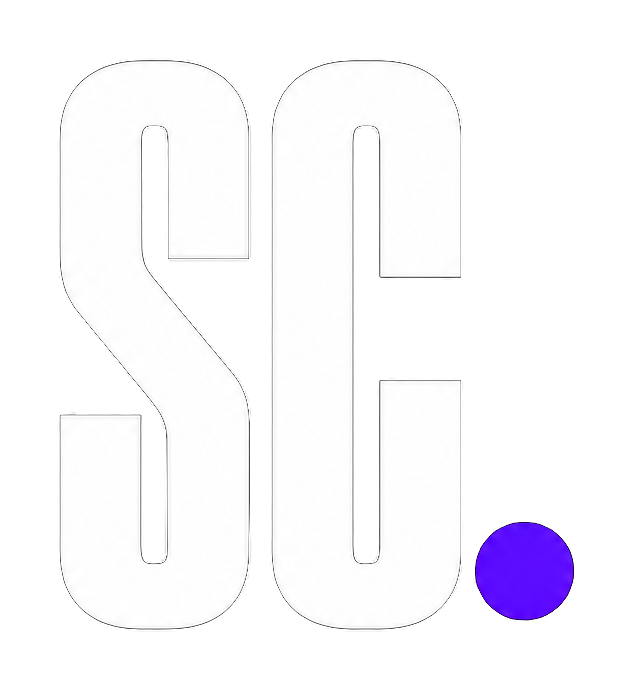
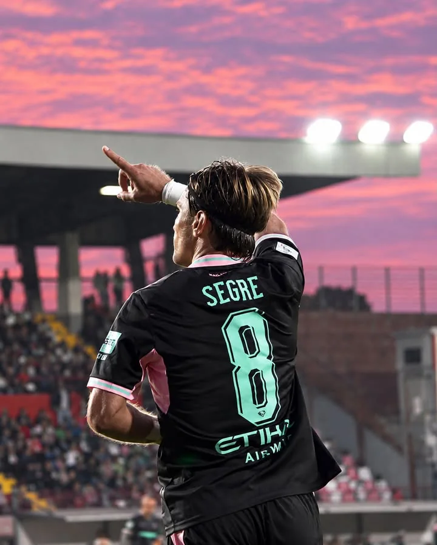
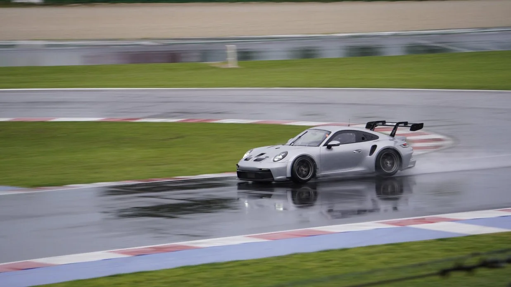
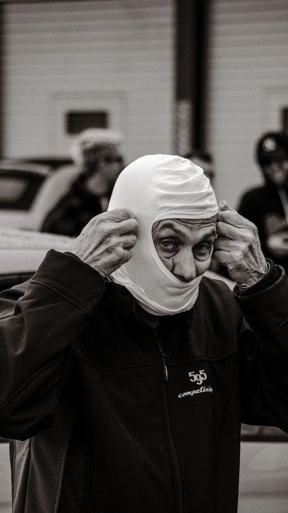
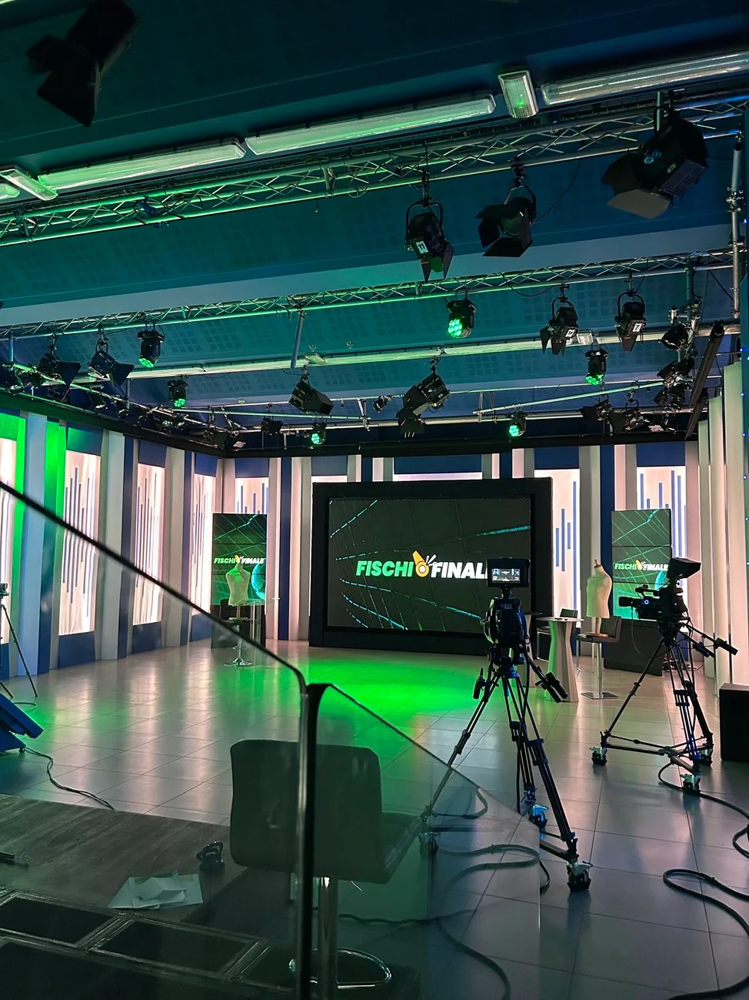
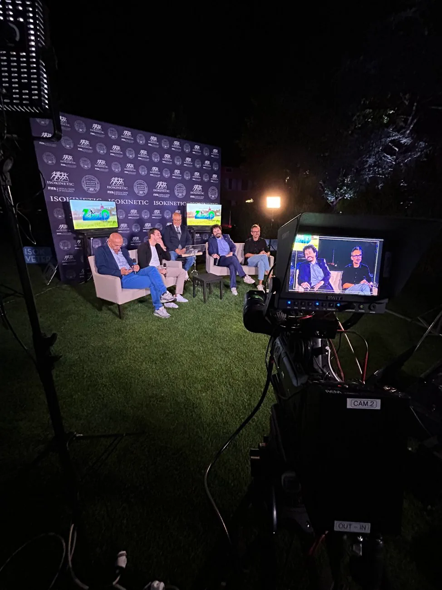
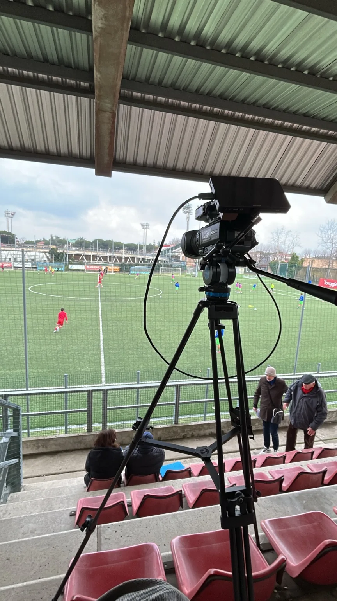
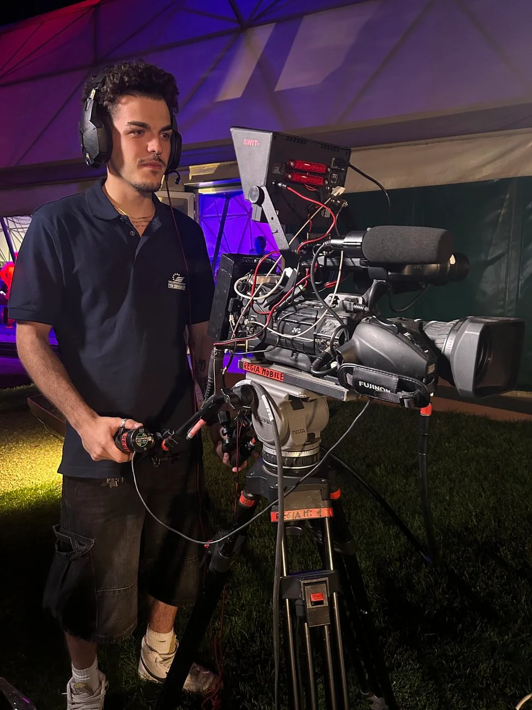

Film e montaggio
Sezione in preparazione: qui arriveranno i progetti video.

Fotografia sportiva, videomaking e riprese televisive.
Immagini autentiche, dentro e fuori dal campo.



Velocità e movimento, anche sotto la pioggia.
Sezione in preparazione: qui arriveranno i progetti video.
Lavoro come operatore di ripresa per servizi giornalistici, dirette ed eventi. Mi occupo di acquisire immagini e contributi video per le redazioni e le produzioni con cui collaboro. Il montaggio finale e la messa in onda sono curati dalle rispettive emittenti.



Le immagini mostrano ambienti di lavoro e backstage. I servizi televisivi trasmessi non sono presentati come produzioni integralmente realizzate da me.
Una selezione di fotografie originali dal mio archivio. Clicca su uno scatto per visualizzarlo a schermo intero.

Sono Simone Ceccaroli. Fotografo e operatore di ripresa.
Mi occupo di fotografia sportiva e riprese video. Collaboro inoltre come operatore di ripresa per servizi e dirette televisive: il mio lavoro è realizzare le immagini, che vengono poi montate e trasmesse dalle redazioni. Mi interessa catturare quello che succede davvero: l'azione, l'atmosfera e tutto ciò che resta fuori dall'inquadratura più ovvia.
Lavoro in Italia e sono disponibile per progetti e collaborazioni.
Per servizi fotografici, produzioni video e collaborazioni.
Qui potrai inserire i tuoi link PayPal e Satispay, appena disponibili. Non sono stati inventati indirizzi di pagamento.